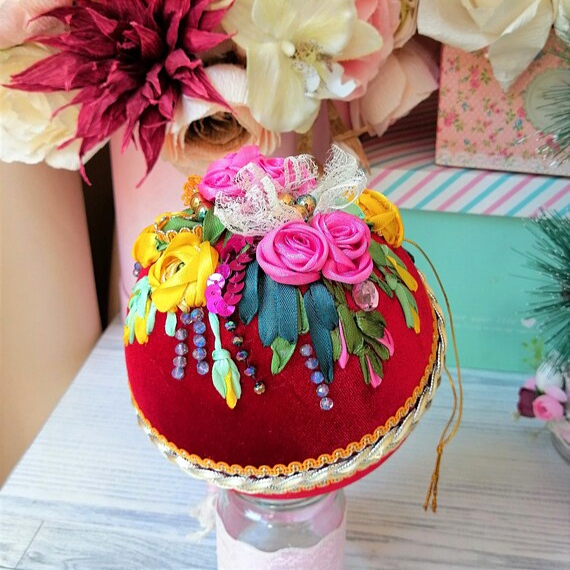
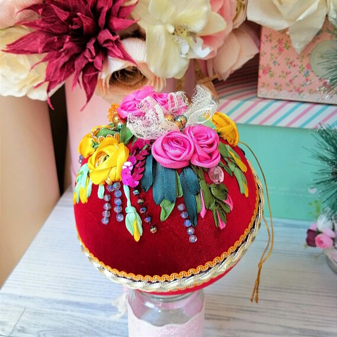
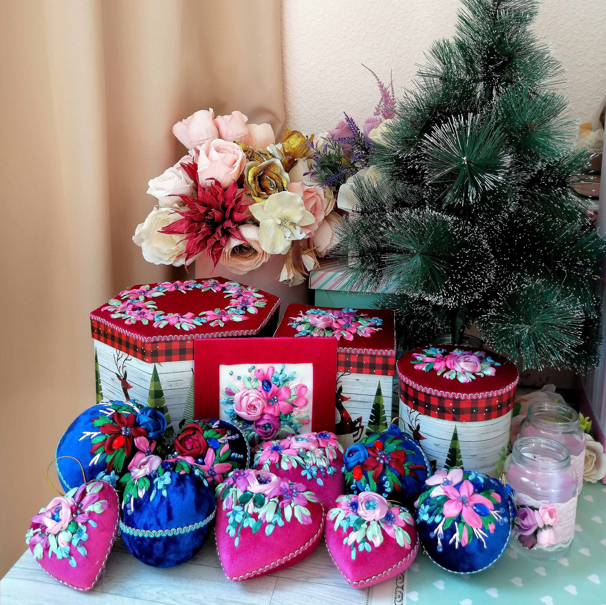
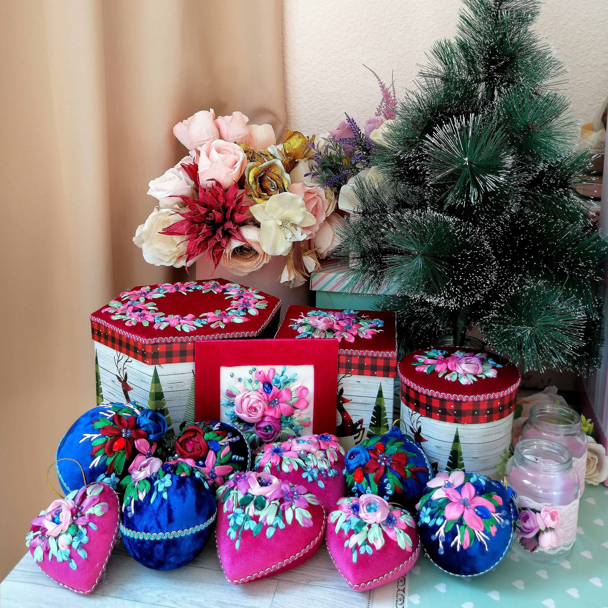

Hi, I am Olga. Welcome to the website with my works made in ancient technique of ribbon embroidery. I made them with all my love and passion to flowers and I hope you will enjoy them. I gathered all of them in my Gallery in a little bit chaotic way, but the filters can be helpful. In the section Videos you can find videos and other stuff about ribbon embroidery.
I do not sell my works. This website is only for fun.
 



 
